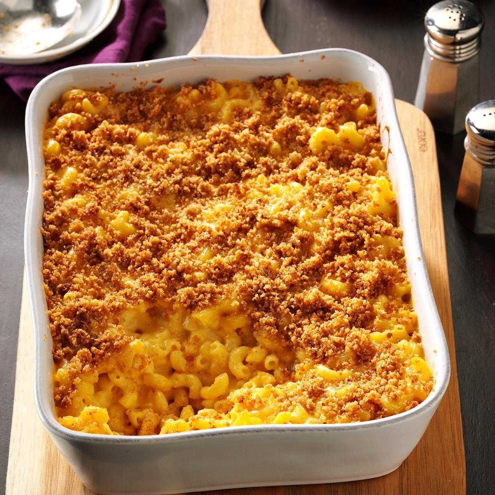

Baked Mac and Cheese

Description
This is a recipe for a decadent baked macaroni and cheese that I found on reddit.
It serves 4-8 people and is fairly calorically dense. May cause spontaneous naptimes.
Ingredients
- Cheddar
- Gruyere
- Butter
- Macaroni
- Flour
- Breadcrumbs
- Milk
Steps
- Boil your macaroni, but stope 2 minutes before done.
- Toast breadcrumbs in melted butter for 5-10 minutes.
- Shred cheddar and gruyere.
- Make a roux with flour and butter.
- Add milk to create a bechamel and thicken for 5-10 minutes.
- Remove from heat and add cheese.
- Pour sauce and macaroni into baking dish.
- Top with toasted breadcrumbs.
- Bake at 350 degrees for 25 minutes.